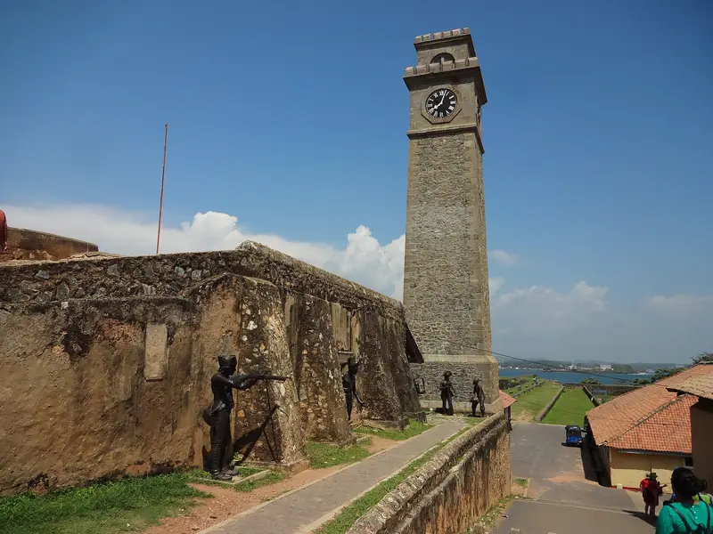

Loading the island
ශ්රී ලංකාවஇலங்கை
Your Sri Lanka. Your way. Within your budget.
Tap the island to explore, or scroll to drive across it.
You land at sea level
The island is 432 km long, but the roads are slow. This is the first trip most people take: seven days and 741 km of real road. Keep scrolling to drive it, and drag to look around.
Sigiriya
සීගිරියசிகிரியா150 km
A palace on top of a rock
About four hours from the airport, the rock rises about 180 metres out of flat forest. King Kashyapa built on its summit in the fifth century. Climb at opening time, before the heat.

Kandy
මහනුවරகண்டி239 km
The last royal capital
The road starts to climb. Kandy sits around its lake at about 480 metres, and the drums of the Temple of the Sacred Tooth Relic still mark the evening.

Nuwara Eliya
නුවරඑළියநுவரெலியா308 km
1,947 metres above the sea
This is the top of the road, only 69 km after Kandy. Tea climbs every slope and the air turns cool.

Ella
ඇල්ලஎல்ல376 km
Where the hills fall away
Trains are running again from Nanu Oya through Ella to Badulla, after Cyclone Ditwah closed the line in late 2025. Watch one cross the Nine Arch Bridge, then walk up Little Adam's Peak.

Galle
ගාල්ලகாலி581 km
The road ends at the sea
From the hills it runs 204 km back down to the coast. Walk the ramparts of Galle Fort at sunset, then stay inside the walls after the day visitors leave.

741 km. Seven days. Yours to change.
That was Sri Lanka Highlights. Swap a hotel, add a stop or take a different road, and the cost and the driving time follow.
Two monsoons, one island
Northeast monsoon
January
Good on the west coast, south coast, hill country, Cultural Triangle and Yala and Udawalawe.
Wet on the east coast and the north.
Usually goodMixedOften wet
A general guide from typical weather patterns. Each year is different.
Six parts of one small island
Sri Lanka is small, but the roads are slow. Most trips of one or two weeks cover three or four of these. Point at one and watch the island.
- Sigiriya and the Cultural Triangle

A rock fortress, painted caves and ruined royal cities in the dry heart of the island.
- Kandy

The last royal capital, built around a lake and home to the Temple of the Sacred Tooth Relic.
- Ella and the Hill Country

Tea estates, cool mornings, waterfalls and the train ride people talk about for years.
- The Southern Coast

Galle Fort, surf bays and quiet beaches, with whales offshore in the dry season.
- The East Coast

Wide beaches, coral reefs and calm seas from April to September, when the south coast is rough.
- Wildlife and Rainforests

Leopards in Yala, elephants in Udawalawe, and the old rainforest of Sinharaja.


What you came for
 Wildlife safarisPhoto: Eli Solidum, CC BY-SA 4.0, resized
Wildlife safarisPhoto: Eli Solidum, CC BY-SA 4.0, resized Scenic train journeysPhoto: V. Epiney, CC BY-SA 2.0, resized
Scenic train journeysPhoto: V. Epiney, CC BY-SA 2.0, resized Tea estatesPhoto: Rehman Abubakr, CC BY-SA 4.0, resized
Tea estatesPhoto: Rehman Abubakr, CC BY-SA 4.0, resized Beaches and surfingPhoto: Dinusha Chathuranga, CC BY-SA 4.0, resized
Beaches and surfingPhoto: Dinusha Chathuranga, CC BY-SA 4.0, resized Culture and heritagePhoto: Balou46, CC BY-SA 3.0, resized
Culture and heritagePhoto: Balou46, CC BY-SA 3.0, resized Wellness and slow travelPhoto: Satdeep Gill, CC BY 4.0, resized
Wellness and slow travelPhoto: Satdeep Gill, CC BY 4.0, resized
 Wildlife safaris
Wildlife safaris Tea estates
Tea estates Beaches and surfing
Beaches and surfing Culture and heritage
Culture and heritage Wellness and slow travel
Wellness and slow travelStart from a trip, then change it
Each one is a full trip that already works. Point at one to see its road on the island. Open it and change the dates, stays, places and pace while the price follows.
- Sri Lanka Highlights7 days. Sigiriya, Kandy, Ella, Galle. 7 day highlights, First trip.From US$778
- South Coast Escape5 days. Galle, Mirissa. 5 day escapes, Coast.From US$518
- Hill Country and Wildlife8 days. Kandy, Nuwara Eliya, Ella, Udawalawe, Mirissa. 7 day highlights, Nature.From US$886
- Honeymoon in Sri Lanka10 days. Sigiriya, Kandy, Ella, Mirissa. 10 to 14 day journeys, Honeymoon.From US$1,583
- Family Adventure12 days. Negombo, Sigiriya, Kandy, Ella, Yala, Mirissa. 10 to 14 day journeys, Family.From US$1,740
- Sri Lanka on a Budget7 days. Kandy, Ella, Mirissa. 7 day highlights, Budget friendly.From US$396
Sample prices per person, two adults sharing, in USD without flights. No live hotel rates or availability are connected yet.
Within your budget
Sample estimates for two adults sharing a room. A real person checks every plan before anything is booked.
How planning works
How we choose what to suggest
We look at rating, number of reviews, how recent they are, location, the total cost for your dates and the cancellation terms, and we tell you why. A Google rating and a hotel star class are not the same thing, so we show them separately.
What the price includes
Stays, transport, train seats, the activities you pick and an allowance for meals. Flights, insurance, visas and tips are not included unless you say your budget covers flights.
How changes work
Swap a hotel, add a night, change a place or remove an activity. If a change affects driving time or other days, you see that before you apply it. Every change can be undone.
How you get help
Ask for a quote and a person checks the plan, the dates and the suppliers. Email and WhatsApp details will be listed here once the service opens.
What happens before you book
Your plan starts as an estimate. Next comes a quote confirmed with the hotels and drivers. You only pay once the final price and availability are confirmed.
Start with a trip. Leave with your own.
Your plan saves in this browser and you can download it any time.